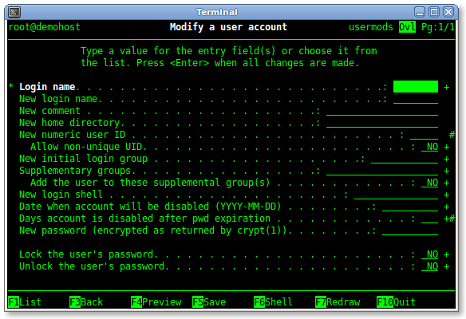
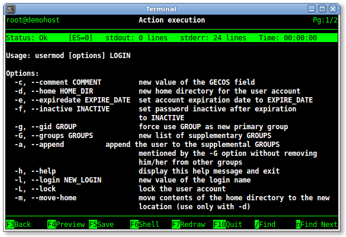
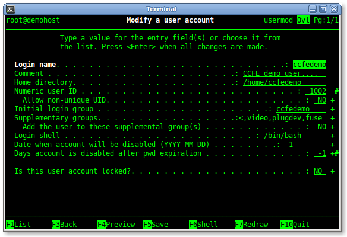
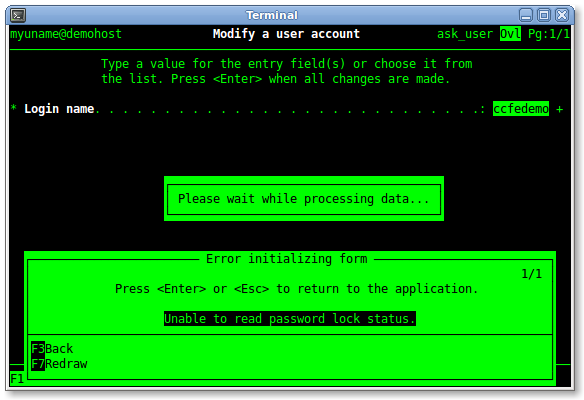
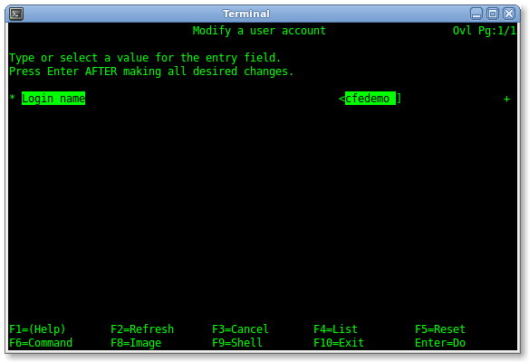
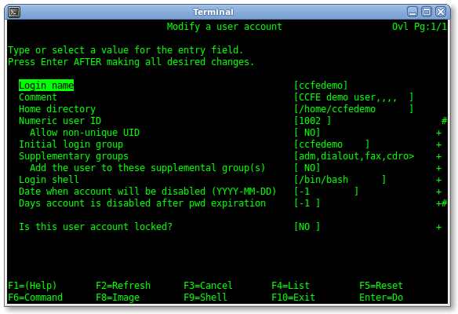
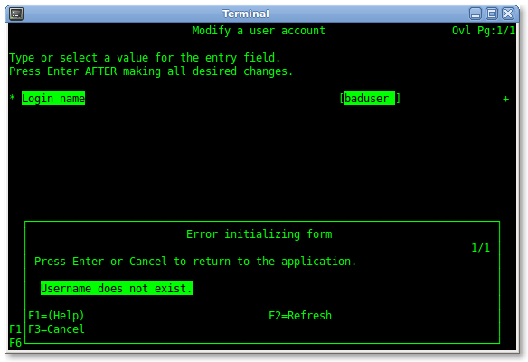
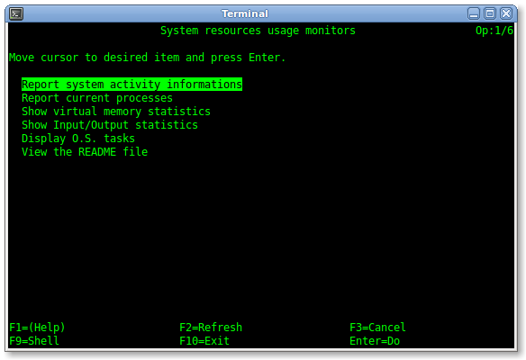

Schermate
L'applicazione di un'interfaccia CCFE negli esempi riportati in seguito è
inutile dal punto di vista pratico: serve unicamente per mostrare l'aspetto del
software e per una breve descrizione operativa.
- Esempio 1: Maschera video base per il comando usermod(1)
- Maschera video base
- Menu pop-up di selezione valore campo
- Visualizzazione anteprima azione della form
- Browser dell'output delle azioni di form e menu
- Esempio 2: Maschere video per il comando usermod(1)
(È disponibile anche un breve video)
- Finestra pop-up con lo standard error del blocco init{}
- Maschera video con alcuni campi disabilitati o rimossi dal blocco init{}
- Esempio 3: Menu
- Esempio 4: CCFE configurato per apparire simile allo SMIT di AIX
(È disponibile anche un breve video)
IBM and AIX are trademarks of International Business Machines Corporation in the
United States, other countries, or both.
Maschera video base per il comando usermod(1)
Il file
usermods.form definisce la seguente maschera video per
il comando Linux
usermod(1):

Figura 1 - Maschera video base
Questa è l'esempio di definizione base di una form: ad ogni opzione
supportata dal comando
usermod(1) è associato un campo, ed
è fornito un minimo di supporto per la compilazione:
ad esempio, premendo il tasto
<F1> nel primo campo si apre
un menu pop-up con l'elenco dei valori ammessi, i quali vengono generati come
indicato nel relativo
attributo list_cmd:

Figura 2 - Menu pop-up di selezione valore campo
Inserendo alcuni valori nei campi della form (notare che i campi modificati
sono automaticamente visualizzati in grassetto), premendo il tasto
<F4> viene aperta una finestra pop-up in cui è presente
l'anteprima del comando che verrà eseguito quando l'utente
premerà il tasto
<Enter>:

Figura 3 - Visualizzazione anteprima azione della form
Un'esecuzione terminata con successo del comando
usermod(1) non ha
output, così provando ad inserire nei campi valori non corretti e
premendo il tasto
<Enter>, nella schermata dell'output browser
saranno presenti i messaggi di standard error, visualizzati in grassetto per
differenziarli da quelli di standard output che invece hanno gli
attributi video standard:

Figura 4 - Browser dell'output delle azioni di form e menu
Maschere video per il comando usermod(1)
Il seguente esempio è più complesso del precedente, ma semplifica
l'interazione dell'utente con interfaccia CCFE applicata al comando
usermod(1): l'interfaccia CCFE è composta di due form, la prima,
ask_user.form,
richiede lo username dell'account da modificare (supponiamo "ccfedemo"):

Figura 5
(notare che il tasto
<F1> è attivo come nell'
esempio 1 e la partentesi angolare sinistra indicatrice dello
scorrimento a sinistra del valore del campo)
Premendo il tasto
<Enter> viene richiamata la seconda maschera video,
usermod.form, con tutti i campi
automaticamente compilati con i valori correnti del sistema,
così l'utente può modificarli a piacere:

Figura 6
Il successivo esempio mostra come il blocco
init{} di
questa form può gestire alcune eccezioni
per modificare l'interazione con l'utente: ad esempio, se l'utente inserisce
nella form
ask_user.form un nome di account
non valido, allora CCFE mostrerà la seguente finestra pop-up di errore:

Figura 7 - Pop-up window con lo standard error del blocco init{}
e la form successiva non verrà richiamata fino a che l'utente non
inserirà nel campo il nome di un account presente nel sistema.
Questo comportamento può essere controllato con lo
standard error
e l'
exit status dell blocco
init{}, come è descritto
nella documentazione fornita col software.
Se CCFE viene eseguito da un utente senza i privilegi di
root, come ad
esempio dall'utente "myuname", allora le informazioni sulla scadenza delle
password non possono essere lette, comparirà la seguente finestra
pop-up:

Figura 8 - Pop-up window (2) con lo standard error del blocco init{}
e nella form successiva non saranno presentati all'utente i valori dei relativi
campi e sarà rimosso il campo che permette di bloccare/sbloccare l'account:

Figura 9 - Form di fig. 6 con alcuni campi disabilitati o rimossi dal blocco init{}
Infine, giocando sui nomi dei file, è possibile attivare la nuova
scorciatoia usermod come punto di ingresso per richiamare
direttamente le form dell'
esempio 2 col comando
"
ccfe usermod": è sufficiente
- rinominare usermod.form in dousermod.form
- rinominare ask_user.form in usermod.form e cambiare di conseguenza il nome della form richiamata nel blocco action{}.
Per maggiori dettagli fare riferimento alla documentazione fornita col software.
La seguente schermata è stata prodotta caricando il menu
sysmon.menu, fornito insieme a CCFE come plugin di
esempio:

Figura 10 - Un semplice menu
CCFE configurato per apparire simile allo SMIT di AIX
In questo esempio sono riproposte alcune delle precedenti schermate, ma relative
ad un'istanza di CCFE con i file di configurazione
ccfe.conf e
msg/C/ccfe modificati in modo da rendere l'aspetto di CCFE simile a
quello del
System Management Information Tool del Sistema Operativo AIX:

Figura 11

Figura 12

Figura 13

Figura 14

Figura 15

Figura 16